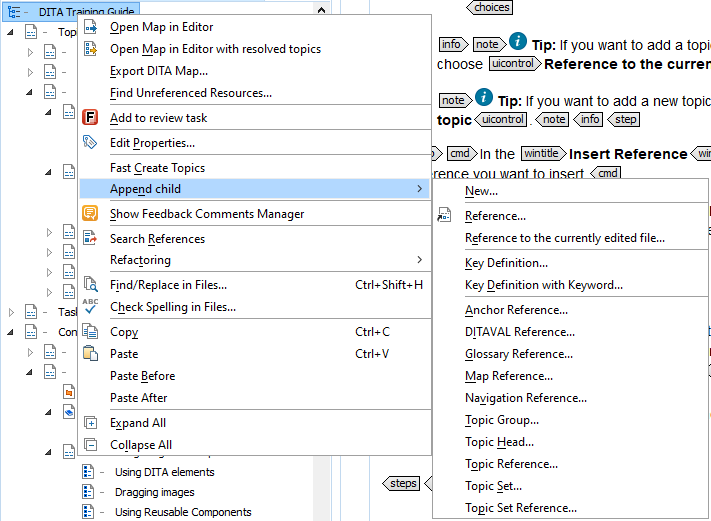

---
# Generated from DITA source
layout: default
title: "To add a topic to a DITA map"
index: "../toc.html"
---
To add a topic to a DITA map
To add a topic to a DITA map, choose one of the following:
Click (Insert Reference) at the top of the DITA Maps Manager.
Tip: If you cannot see this icon, click the Settings icon and select Show extended toolbar.
Right-click your DITA Map and choose Append child > Reference

Tip: If you want to add a topic you are currently working in, choose Reference to the currently edited file.
Tip: If you want to add a new topic, choose New....
In the Insert Topic Reference dialog window, navigate to the reference you want to insert.
Note: If you choose Reference to the currently edited file option, your current file will already be selected.
Do one of the following:
If you have more than one topic to add, choose Insert and repeat from step 2 until you have added all the desired topics. Then click Close to return to your DITA map.
Choose Insert and close if this is the only topic you wish to add.
Note: Drag and drop a topic file to your DITA map. You can drag files from your file system explorer, the Project view or the Open/Find Resources view.
 (Insert Reference) at the top of the DITA Maps Manager.Tip: If you cannot see this icon, click the Settings icon and select Show extended toolbar.
(Insert Reference) at the top of the DITA Maps Manager.Tip: If you cannot see this icon, click the Settings icon and select Show extended toolbar.